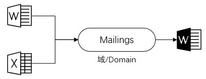
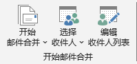
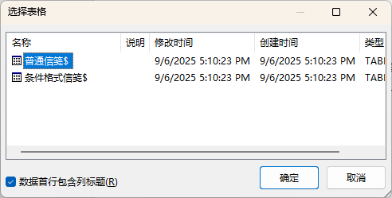
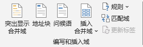
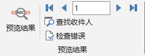
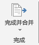
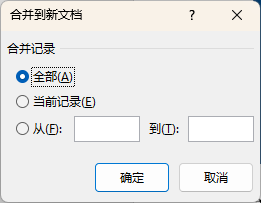
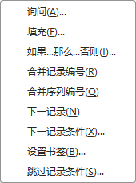
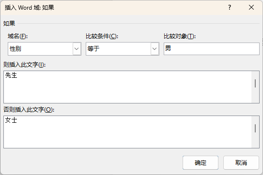

邮件
Mailings
- 内容 Contents
- 邮件 Mailings
基本使用 Basic
- 综合使用"开始邮件合并"和"编写和插入域"完成邮件的批量编辑
- 将一个 Word 文档与一个 Excel 数据源结合起来，利用特定规则操作数据，快速生成一系列格式相同、内容不同的文档
- 相格式由 Word 决定；内容/数据来自 Excel
- 操作需要
一个 带有占位符/域的 Word 文档
一个 带有数据的 Excel 文档
- 输出：
一个使用数据替代了占位符/域的 Word 文档
- 常见应用：
邀请函
成绩单
信封
工资条
标签
- 打开个人工作目录
- 创建名字为"邮件"的文件夹
- 点击下载数据文件 工作通讯录.xlsx
- 点击下载模板文件 会议邀请函.docx
- 将 2 个文档剪切到"邮件"文件夹
- 打开会议邀请函，后续操作都在"邮件"选项卡
- "邮件" → "开始邮件合并" → "信笺"（可略，默认是信笺）
- "选择收件人" → "使用现有列表(E)…"，在弹出的"选取数据源"对话框中选取下载的工作通信录文件并指定其中的"普通信笺"工作表，最后确定
- 插入名称：鼠标移动到称呼处的 * 处，删除 *，选择"编写和插入域"分组 → "插入合并域"，选择"姓名"，插入位置出现占位符/域<<姓名>>
- 插入单位：用同样的方法，插入"单位"
- 选择"预览结果"，单击前后箭头查看记录，确认文档中的数据是否有误
- 点击"完成"分组 → "完成并合并" → "编辑单个文档…"，在"合并到新文档"对话框中，选中"全部"并确定，系统便自动合并记录生成一个新的文档
- 删除新文档中多余的文字，如公司，保存到"邮件"文件夹，命名为邮件合并
- 关闭所有文件，检查"邮件"文件夹，应该有 3 个文档
- 创新打开 Word 文档并指定 Excel 数据源
- 首先插入"姓名"
- 定位光标在"姓名"后面，选择"规则"的"如果...那么...否则(I)"；如果性别是男，就指定为先生，否则为女士

邮邀请函






【思考】不使用预览，如何快速浏览结果
利用"规则"指定称呼


英语等级考试中心给考生发放 CET-4 考核成绩通知，通过显示为pass
教秘给上计算机应用基础的老师发送机房就绪通知
财务给在职的员工发送工资条
高级使用 Advanced
- 使用图片
- 需要配合文档部件中的域来实现，并使用绝对路径或相对路径拼接处完整的图片路径
- 环境介绍
- 准备图片：图片最好放在一个文件夹内
- 准备数据源文件：Excel 文件；仅仅给出图片的文字名，如 gl.png，没有给出路径，需要后面修改域代码完成拼接
- 准备邮件文件：Word 文件，并编辑好文案
- 注意：以上文件位置不做要求，尽量放在一起
- 使用步骤
- 打开邮件文件，定位光标，插入"文档部件" → "域"，选择包含图片的域，并指定其路径；系统对外部的操作会给出警告信息，确认即可
- 按 Alt + F9 切换到域代码编辑状态，显示为：{INCLUDETEXT "E:\\OA\\imgs" \* MERGEFORMAT }
- 将光标定位在路径最后面 imgs 处，切换回"邮件"，插入图片域，此时的图片对应的域代码为：{INCLUDETEXT "E:\\OA\\imgs\\{MERGEFIELD 头像}" \* MERGEFORMAT }
- 按 Alt + F9，退出域代码编辑状态，按 F9 刷新，检查图片的加载情况
- 后续的完成合并同前；如果图片没有更新，请按 F9
- 保存


| item | desc | demo |
|---|---|---|
| \# 0.00 | 指定小数位数 | 12→12.00 |
| \# ￥####0.00 | 增加货币符号并指定宽度 | 2→￥ 2.00 |
| \@ YYYY-MM-DD | 数字显示 | 7/1/1995→1995-07-01 |
| \@ EEEE年O月A日 | 中文显示 | 7/1/1995→一九九五七月一日 |